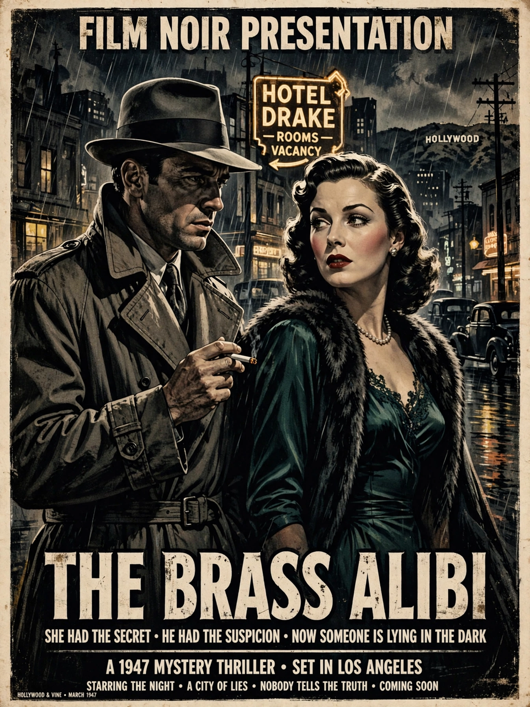

The Big Sleep is a 1946 American film noir directed by Howard Hawks and starring Humphrey Bogart as private detective Philip Marlowe and Lauren Bacall as Vivian Rutledge. The screenplay, adapted from Raymond Chandler's 1939 novel of the same name, was written by William Faulkner, Leigh Brackett and Jules Furthman. The film is celebrated for its intricate, famously convoluted plot and for the crackling chemistry between Bogart and Bacall.
| The Big Sleep | |
|---|---|
| Directed by | Howard Hawks |
| Screenplay by | William Faulkner, Leigh Brackett, Jules Furthman |
| Based on | The Big Sleep (1939) by Raymond Chandler |
| Starring | Humphrey Bogart, Lauren Bacall |
| Release date | 1946 |
| Studio | Warner Bros. |
Los Angeles private eye Philip Marlowe is hired by the wealthy, dying General Sternwood to resolve a blackmail attempt against his younger daughter Carmen, who is being extorted over gambling debts and compromising photographs. As Marlowe digs into the case he encounters the general's elder daughter Vivian, pornographers, gamblers, blackmailers and a string of murders. The trail leads through the affairs of casino owner Eddie Mars, and the plot's thicket of double-crosses resolves only after Marlowe confronts the truth about the disappearance of Sternwood's protégé, Sean Regan.
The film was shot in 1944–45 but its release was delayed so Warner Bros. could clear its backlog of war-related pictures; a 1945 prerelease version exists and differs in several scenes. Additional scenes emphasizing the Bogart–Bacall romance were shot in 1946 after the success of To Have and Have Not. A famous anecdote holds that when Hawks and the screenwriters wired Chandler to ask who had killed one of the victims, Chandler replied that he did not know either.
The Big Sleep is regarded as a definitive film noir and one of the great Hollywood detective films. In 1997 it was selected for preservation in the United States National Film Registry by the Library of Congress.
See also: Film noir · Humphrey Bogart